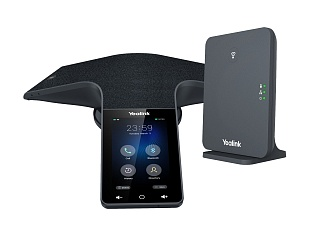

Yealink CP935W-Base
Цена носит информационный характер — актуальную стоимость и наличие уточняйте у менеджера.
Yealink CP935W-Base — это беспроводной сенсорный конференц-телефон корпоративного уровня для конференц-залов малого и среднего размера. Отличительной особенностью устройства является возможность подключения как по стандарту DECT к базовой станции Yealink W70B (входит в комплектацию) с расширением дальности действия до 50 м и сохранения стабильности сигнала, так и регистрация SIP-аккаунта непосредственно через Wi-Fi.
Черная акустически прозрачная ткань, которой покрыта часть корпуса CP935W-Base, непроницаема при любых случайных разливах жидкости, ЖК-экран имеет олеофобное покрытие (препятствующее загрязнению отпечатками пальцев), а удобный и логичный пользовательский интерфейс позволяет легко управлять конференцией. Ультратонкий корпус телефона подчеркивает деловой стиль конференц-зала, форм-фактор обеспечивает устойчивое положение на рабочем столе, а специальный разъем позволяет скрыть провода. Простой интерфейс на базе ОС Linux позволяет пользователям начинать конференцию по нажатию одной кнопки.
CP935W-Base имеет Y-образный дизайн. Телефон оснащен 6 встроенными микрофонами, обеспечивая захват голоса в радиусе до 6 метров/на 360° и передавая собеседникам четкое и естественное звучание речи.
Благодаря встроенному аккумулятору, использованию технологии DECT или модуля Wi-Fi CP935W-Base можно подключить без использования адаптера питания и сетевого кабеля, освобождая конференц-зал от проводов. Кроме того, встроенная перезаряжаемая батарея обеспечивает до 20 часов разговора и 167 часов в режиме ожидания, гарантируя длительное время работы без подзарядки.
CP935W-Base поддерживает 5-стороннюю конференц-связь, позволяя участникам из разных точек общаться без каких-либо препятствий и помех, а также снижая затраты компании. CP935W-Base можно подключить к мобильным устройствам через Bluetooth или USB-порт, реализуя гибридную конференцию.
В комплект поставки входит базовая станция Yealink W70B.
Гарантия — 18 месяцев.
Характеристики
Функции телефона
- Поддержка до 10 трубок (CP935W работает как трубка)
- Поддержка до 10 SIP-аккаунтов (для CP935W только один аккаунт)
- Пейджинг, интерком, правила набора
- Удержание вызова, отключение микрофона, DND ("Не беспокоить"), запись разговора, горячая линия
- 5-сторонняя конференция
- Переключение между вызовами
- Идентификатор вызывающего абонента с именем и номером
- Анонимные вызовы, отклонение анонимных вызовов
- Повторный набор номера, режим ожидания, экстренные вызовы, голосовая почта, блокировка клавиатуры
- Переадресация вызова, трансфер вызова, возврат вызова
- Выбор мелодии/загрузка/удаление
- Установка времени: вручную/синхронизация по сети
- Сопряжение через Bluetooth
- Вызов по IP (peer-to-peer)
- Сброс к заводским настройкам, перезагрузка
Аудиофункции
- Звук в формате Optimal HD
- Технология шумоподавления Yealink
- Технология шумоподавления Smart Noise Filtering
- Рабочая дистанция захвата голоса: 6 м
- Применяется для небольших и средних конференц-залов
- 6 встроенных микрофонов
- Динамик:
- Частота: 100 - 20 000 Гц
- Громкость: 94 дБ
- Мощность: 5 Вт
- Диаметр: 56 мм
- Полнодуплексная связь (Full-duplex) с AEC (подавление эха)
- Кодеки: G.722, G.722.1C, G.726, G.729, G.729A, G.723, iLBC, Opus, PCMU (G.711μ), PCMA (G.711A), AMR
- DTMF: In-band, Out-of-band (RFC 2833), SIP INFO
- VAD (обнаружение активности голоса), CNG (генератор комфортного шума), AEC (подавление эха), PLC (маркирование потери пакета с медиа-данными), AJB (адаптивный буфер для голосовых пакетов), AGC (автоматическая регулировка чувствительности микрофона)
Записные книги
- Локальная записная книга до 1000 контактов
- Удалённая записная книга XML и LDAP
- Поиск по записным книгам/импорт/экспорт записной книги
- История вызовов: набранные/принятые/пропущенные/переадресованные вызовы
- Чёрный список
Интеграция с IP-АТС
- BLF
- Пейджинг
- Интерком
- Анонимные вызовы
- Отклонение анонимных вызовов
- Голосовая почта
- Выбор мелодии
- Перехват вызова
Экран
- 4" сенсорный экран с разрешением 480 x 800
- Экранные клавиши регулировки громкости
- Центральная экранная клавиша
Интерфейс
- Встроенный Wi-Fi
- Встроенный Bluetooth 4.2
- 1 порт USB 2.0 Type-C
- Разъём для замка
Сетевые характеристики и безопасность
- SIP v1 (RFC2543), v2 (RFC3261)
- SNTP/NTP
- VLAN (802.1Q и 802.1P)
- 802.1x, LLDP
- Поддержка STUN-сервера
- UDP/TCP/TLS
- Назначение IP-адреса: статический/DHCP
Управление
- Настройка телефона: веб-интерфейс/экран телефона/Autoprovision
- FTP/TFTP/HTTP/HTTPS/PnP Autoprovision
- Zero-sp-touch, TR-069
- Сброс к заводским настройкам, перезагрузка
- Логи: PCAP Trace, system log
Физические характеристики
- Цвет: чёрный
- Потребление через блок питания: 2,2 - 6 Вт
- Ёмкость аккумулятора: 7800 мАч
- Время зарядки: 4 часа
- До 167 часов в режиме ожидания DECT (в идеальных условиях)
- До 15 часов работы в режиме разговора (в идеальных условиях)
- Размеры (Ш х Г х В): 288,6 х 285,2 х 63,9 мм
- Рабочая влажность: 10-90%
- Рабочая температура: -10-40 °C